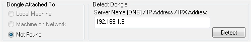
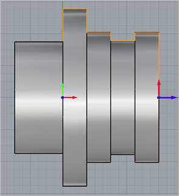

TURN Module requires Solid, Surfaces, Polygon Meshes, Regions/Curves that defines the part geometry. Since all parts that can be created in a 2-Axis turning machine are solids of revolutions, it is enough to describe the profile that needs to be revolved to create this shape. The profile can be created in Rhino as a region or curve. TURN Module automatically creates the 2D silhouette of this part region when 3D Solid or Surface geometry is selected as TURN part geometry.
Furthermore, TURN Module places a further restriction that these part geometry need to be constrained to lie only in the first quadrant of the ZX plane in turn coordinate system. This would essentially be XY plane (Top view) in world coordinate system in Rhino.  The First Quadrant, XY Plane Restriction |
TURN Module will be unable to process a part region that fall outside the first quadrant. If the selected part region is outside the first quadrant, TURN Module will trim this to the first quadrant.  If Geometry Falls Outside the First Quadrant of the XY Plane
|